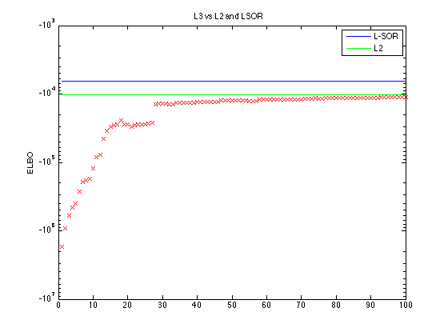
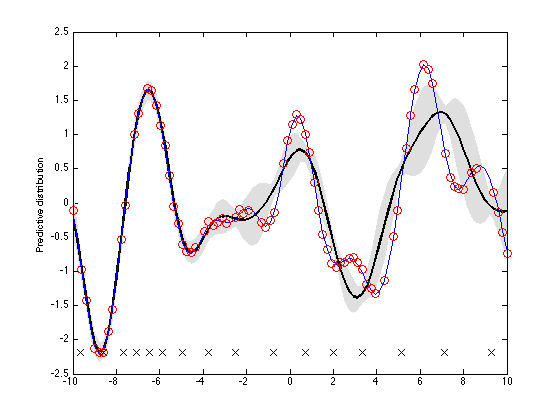

Contents
clear all; clc; close all;
Paths and general settings
path(path(), '~/Dropbox/Matlab/utils');
path(path(), '~/Dropbox/Matlab/gpml-matlab/gpml');
path(genpath('~/Dropbox/Matlab/Netlab'), path());
covfunc = 'covSEard';
MIN_NOISE = 1e-7;
PTRAIN = 0.8;
PIND = 0.2;
KMEANS = 1;
SIGMA2N = 0.001;
BETAVAL = 1/SIGMA2N;
Learning configuration
cf.maxiter = 100;
cf.tol = 1e-3;
cf.lrate = 0.01;
cf.Sinv0 = [];
cf.m0 = [];
cf.nbatch = 2;
cf.minnoise = 1e-7;
Generate samples from a GP
x = linspace(-10,10)';
D = size(x,2);
nhyper = eval(feval(covfunc));
loghyper = log(ones(nhyper,1));
f = sample_gp(x, covfunc, loghyper, MIN_NOISE);
y = f + sqrt(SIGMA2N)*randn(size(f));
Training, test
Nall = size(x,1);
N = ceil(PTRAIN*Nall);
idx = randperm(Nall);
idx_train = idx(1:N);
idx_test = idx(N+1:Nall);
xtrain = x(idx_train,:); ytrain = y(idx_train);
xtest = x(idx_test,:); ytest = y(idx_test);
Inducing point locations
M = ceil(PIND*N);
idx_z = randperm(N);
idx_z = idx_z(1:M);
z = xtrain(idx_z,:);
if (KMEANS)
z = kmeans(z, xtrain, foptions());
end
Get data structures for computations of marginal likelihoods
sf2 = exp(2*loghyper(nhyper));
Kmm = feval(covfunc, loghyper, z);
[foo Knm] = feval(covfunc, loghyper, x, z);
Lmm = chol(Kmm)';
Imm = eye(M);
Kmminv = ( Lmm' \ (Lmm \ Imm));
valK = sum(Knm'.*(Kmminv*Knm'),1)';
diagKtilde = sf2 - valK;
computes the bounds
lsor = margl_sor(y, Knm, Kmm, Lmm, BETAVAL);
l2 = l2bound(y, Knm, Kmm, Lmm, diagKtilde, BETAVAL);
learning variational parameters
figure;
semilogy((1:cf.maxiter)', lsor*ones(cf.maxiter,1), 'b-'); hold on;
semilogy((1:cf.maxiter)', l2*ones(cf.maxiter,1), 'g-'); hold on;
legend({'L-SOR', 'L2'});
[m S] = learn_q_gpsvi(y, Knm, Lmm, Kmminv, diagKtilde, BETAVAL, cf);
title('L3 vs L2 and LSOR');
ylabel('ELBO');

predictions using gpsvi
[mupred varpred] = predict_gpsvi(Kmminv, covfunc, loghyper, m, S, z, x);
Plot training and predictions
figure;
[x idx] = sort(x);
mupred = mupred(idx);
varpred = varpred(idx);
plot_confidence_interval(x,mupred,sqrt(varpred),1);
hold on;
plot(x,f); hold on;
plot(xtrain, ytrain, 'ro', 'MarkerSize', 8); hold on;
plot(z, min(y)*ones(size(z,1), 1), 'kx', 'MarkerSize', 10);
ylabel('Predictive distribution');
